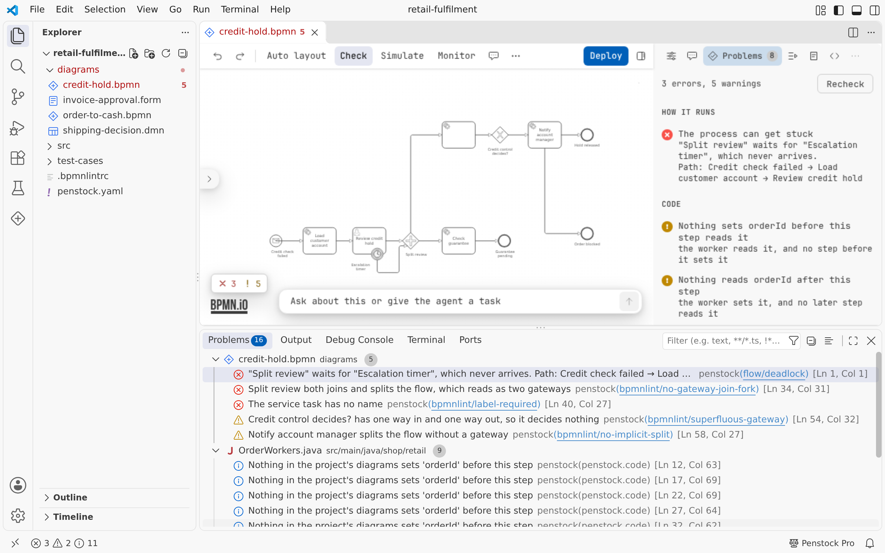
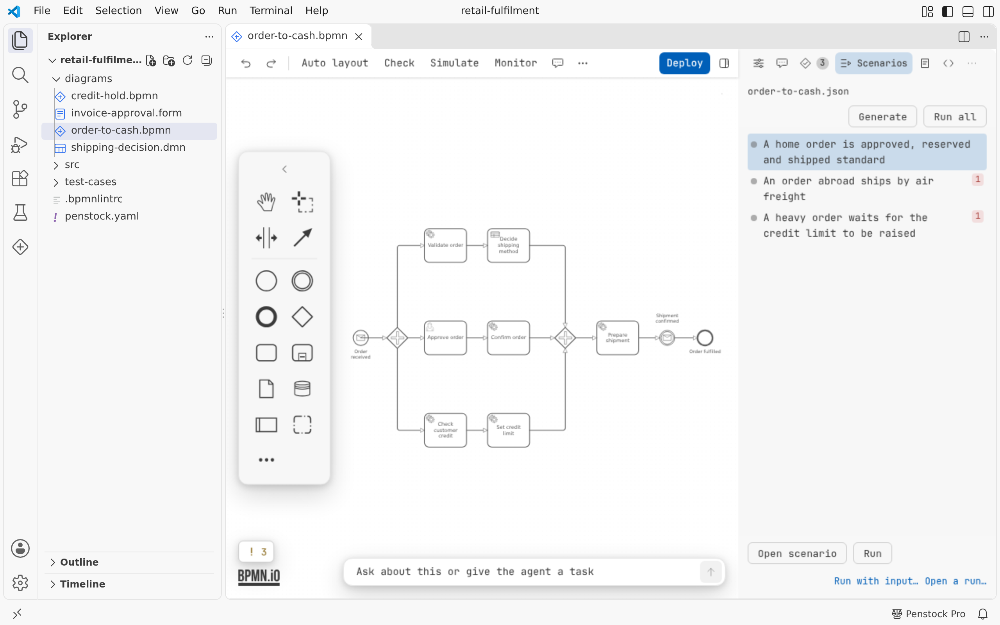
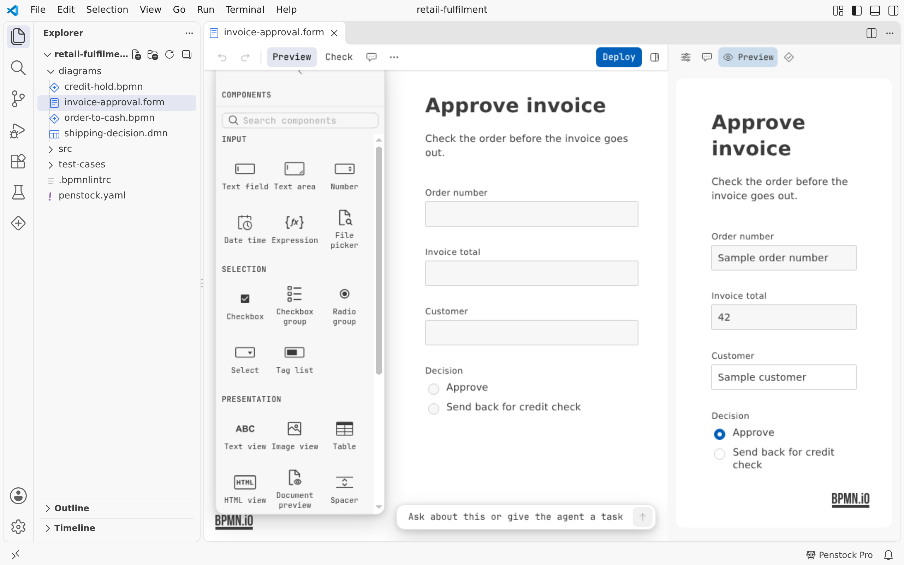

VS Code / Start here
Where things are in VS Code
Every place Penstock shows up in VS Code, in one table, so you can find any feature.
The map
| Where | What is there |
|---|---|
The editor of a .bpmn, .bpmn.xml, .bpmn20.xml, .dmn or .form file | A custom editor, called Penstock BPMN Editor, Penstock DMN Editor or Penstock Form Editor. It opens in place of the text when you open the file. See The BPMN editor. |
| File icons in the Explorer | Dedicated file icons for .bpmn, .bpmn.xml, .bpmn20.xml, .dmn and .form files. |
| The toolbar of the editor | Undo and redo, the actions you pinned, the AI chat button, the More menu, Deploy and the sidebar toggle. Deploy is on the toolbar of all three editors. See Toolbar and More menu. |
| The sidebar of the editor | The column beside the canvas, with the tabs Properties, Chat, Problems, Scenarios, Comments, Code, Monitor and Debug. These are the editor's own tabs, not VS Code's. See The sidebar. |
| The More menu of the editor | A searchable list of every action, in the editor. See Toolbar and More menu. |
| The Command Palette, under Penstock | Every action of the editor as a command with the name it has in the editor: Auto layout, Check, Deploy, Export…, Share as HTML… and the rest. Also Penstock: Create element template, Penstock: Find action, Penstock: Open as text, Penstock: Compare with…, Penstock: Licence and account, Penstock: Sign in, Penstock: AI agents and Penstock: New chat. The two suggestion switches are there too, one command each way: Penstock: Suggest the next element at dead ends and Penstock: Suggest names, sources and expressions for fields, which read Stop suggesting… while they are on. See below. |
| The Command Palette: Open documentation | Opens this guide in your browser. |
| The Activity Bar view container Penstock | The Penstock tool window, in a view called Penstock: processes with their scripts, workers, variables, messages, errors, decisions, forms, templates, deployment, files, and Migrate to Camunda 8. The toolbar has Run all, reload from disk, group by file, folders, Open penstock.yaml (creates the file if missing), and a Run Penstock menu with 9 CLI commands: check, scenarios, junit, code, docs, format, change, export, doctor. Row menus offer Open, Find usages in code, Copy ID, Go to implementation, Deploy, test actions, and CLI commands on the row's file. Pro. See Code links in VS Code. The icon of the container is a single-colour rounded diamond with a plus, so it takes the colour of the Activity Bar. |
| The Chats view, under the Penstock view | The chats of the AI agent, one list per project and the same chats in every editor and window, each with its title and one word of state: working, waiting for you, the time when idle, or the reason when it failed. The view is there while the AI chat is on. Its toolbar has New chat and AI agents, and the menu of a chat has Rename chat and Delete chat. Choosing a chat opens it in the Chat tab of the active editor. With no chat it says No chats yet and offers New chat. See AI chat. |
| The command Penstock: AI agents | The agents screen, in a panel of its own: install, turn on, update and remove the agents of the ACP Registry, refresh their models, and choose where the AI chat is shown, or turn it off. The gear in the heading of the Chats view and Manage agents… in the chat input open the same panel. See AI agents. |
| VS Code's MCP servers list | The extension registers penstock mcp as an MCP server called Penstock, so GitHub Copilot's agent mode and any other MCP-capable chat in VS Code 1.101 or later list the Penstock tools with no configuration. See The MCP server. |
| The Problems view | Diagnostics from three sources: penstock for code link findings (unimplemented steps, unused workers, unknown names) with quick fixes; penstock-diagram for diagram check findings and linter rules; and penstock-config for penstock.yaml problems. Pro for code links and flow analysis. See Code links in VS Code. |
| Above a worker, delegate or subscription in your code | A code lens that names the diagram and element that use it. In the editor, Create element template generates a template at the caret. F2 renames a name shared across code and diagrams. Pro. See Code links in VS Code. |
| Paused in a worker during debugging | When the debugger pauses in Java worker code, the diagram marks the paused task and active elements. Pro. See Code links in VS Code. |
| The Test Explorer | A controller called Penstock scenarios, with one node per diagram and one per test case. Pro. See Scenarios. |
| The Output panel | A channel called Penstock Test Runs, with the steps and the trace of a test run. |
The context menu of a .bpmn file in the Explorer and in Source Control | Compare with…, which opens the visual diagram diff. Pro. See Diagram diff. |
| Notifications | What's new after an extension update (with an action to preview CHANGELOG.md), an offer to rename in code when changing a shared name in a diagram, and licence or connection messages. |
| The status bar, right side | The licence: Penstock Free, Penstock Pro trial: 27d, Penstock Pro or Penstock Team. Click it for the account dialog. See Licence in VS Code. |
| VS Code's Settings | Nothing of Penstock's own. The extension contributes no settings. The project is set up in penstock.yaml. See penstock.yaml. |

penstock-diagram.
order-to-cash.json.
.form file opens in the form editor, with the Components palette and a live preview.Text and diagram
The text document is the only history of a diagram. An edit on the canvas changes the document, and an edit in a text editor beside it changes the canvas. Undo, Redo, Revert and git all act on that document. A file that changes on disk reaches the canvas.
To read the XML, run Penstock: Open as text while the editor has focus. The file opens in VS Code's text editor beside the diagram and is remembered as one you opened as text, so Penstock does not switch it back to the diagram when VS Code starts.
The Command Palette
- An action that the open diagram does not offer is not in the palette. An action it has switched off is greyed out.
- The commands are enabled while a Penstock editor has focus. If one is run with no editor open, VS Code says to open a Penstock editor to use it. If the diagram does not offer it, VS Code says the action is not available for this diagram.
- Penstock: Find action opens the editor's own searchable list.
What you see
- The editor keeps the layout, spacing, type and icons it has in the JetBrains IDE. Only the colours come from the VS Code theme, so a switch between Dark Modern, Light Modern, the high contrast themes or any theme you installed repaints it without a reload. Editor theme in the More menu picks Light, Dark or Dracula for the editor whatever VS Code is running.
- Dialogs put the main button on the right on a Mac and on the left everywhere else.
- The text of the editor shell follows the language of the VS Code window.
Common problems
- I cannot find a feature.
- Check the table above. Some actions are only in the More menu of the editor or in the Command Palette. A few are not available in VS Code yet. See VS Code.
- There is no Penstock page in Settings.
- Right. The project is set up in
penstock.yaml, and the personal choices are in~/.penstock/preferences.json.